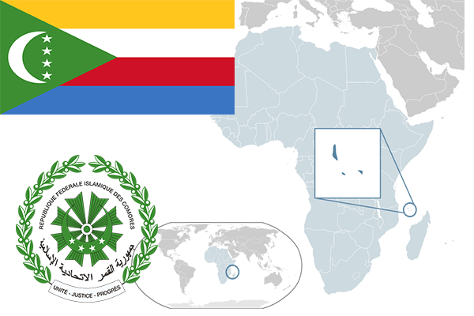

To`liq nomi: Komor islom davlati
Region: Sharqiy afrika
Qonunchilik shakli: Respublika
Mustaqillik kuni : 5-iyun 1975-yil (Fransiyadan)
Poytaxt: Moroni
Maydoni: 2235 km² (dunyoda 168-o`rinda )
Chegaradosh davlatlari: yo`q
Aholisi: 806 153 (dunyoda 158 -o`rinda, 2016 -yil roʻyxat)
Aholi zichligi: 433 /km²
Aholining o`rtacha yoshi: 62,8 yil ( 65,2 ayollar, 60,4 erkaklar)
Rasmiy tili: Komor, fransuz va arab tillari
Dini: 86% musulmon, qolgan qismi katolik
Pul birligi: Komor franki
Telefon prefiksi: +269
Internet domen: .km
Xalqaro tashkilotlarga a`zoligi: BMT (1975 –yildan) Arab davlatlar uyushmasi (20.11.1993 yildan)
Dengiz va okeanlarga chiqishi: Hind okeani
YIM: Butun: $ 1,259 mlrd, Jon boshiga: $ 1528 (2016 - yil roʻyxati)
Yirik shaharlari: Moroni